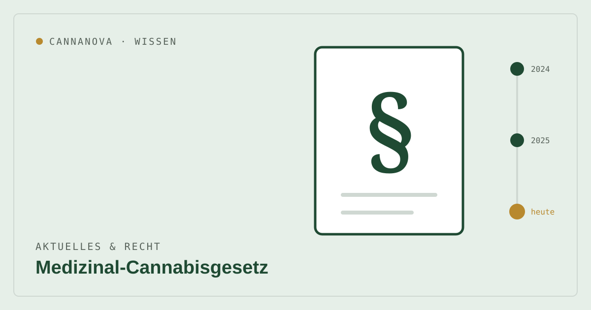

Aktuelles & Recht
Medizinal-Cannabisgesetz: Was sich für Patient:innen ändert

Die rechtlichen Rahmenbedingungen für Medizinalcannabis sind in Bewegung. Wir fassen zusammen, was seit 2024 gilt und welche Änderungen aktuell geplant sind – ohne juristische Beratung, aber mit Blick auf das, was für Patient:innen praktisch zählt.
Stand Ende September 2026: Der Gesetzentwurf ist noch nicht beschlossen und liegt im Gesundheitsausschuss des Bundestages. Telemedizin-Rezepte und der Versand durch Apotheken sind bis zu einer Entscheidung weiterhin zulässig.
Was seit dem Cannabisgesetz 2024 gilt
Mit Inkrafttreten des Cannabisgesetzes (CanG) am 1. April 2024 hat sich die Rechtslage grundlegend geändert: Medizinisches Cannabis wird seither nicht mehr als Betäubungsmittel eingestuft. Das hat den Verordnungs- und Versorgungsweg vereinfacht – ein normales ärztliches Rezept genügt seitdem in vielen Fällen.
Warum jetzt nachgesteuert wird
Nach Inkrafttreten beobachtete der Gesetzgeber eine deutliche Zunahme der Importe von Cannabisblüten. Im ersten Halbjahr 2025 stiegen sie im Vergleich zum Vorjahreszeitraum um mehr als 400 Prozent – von rund 19 auf rund 80 Tonnen. Da die Verordnungen zulasten der gesetzlichen Krankenversicherung nur im einstelligen Prozentbereich zunahmen, sieht das Bundesgesundheitsministerium hierin eine Fehlentwicklung.
Die geplanten Änderungen
Das Bundeskabinett hat am 8. Oktober 2025 einen Gesetzentwurf zur Änderung des Medizinal-Cannabisgesetzes beschlossen. Die zwei zentralen Punkte:
- Persönlicher Arztkontakt: Medizinalcannabis soll künftig nur noch nach persönlichem Kontakt zwischen Patient:in und Ärzt:in verschrieben werden – in der Praxis oder beim Hausbesuch, in der Regel mit Anamnese und Untersuchung. Reine Telemedizin-Verschreibungen wären damit ausgeschlossen.
- Versandweg: Der Versandweg von Medizinalcannabis soll ausgeschlossen werden, weil umfassende Aufklärungs- und Beratungspflichten in der persönlichen Beratung in der Apotheke erfüllt werden sollen. Der Botendienst der Apotheken bleibt davon ausdrücklich unberührt.
Wie es seitdem weiterging
Der Entwurf wurde im Dezember 2025 als Drucksache 21/3061 in den Bundestag eingebracht. Seitdem stockt das Verfahren:
- Februar 2026: Eine Petition gegen die Pläne mit mehr als 58.000 Unterstützer:innen wird dem Bundestag übergeben. Patientenverbände und Teile der Ärzteschaft warnen vor Versorgungslücken, besonders im ländlichen Raum.
- März 2026: Die SPD-Fraktion signalisiert, einem pauschalen Versandverbot in dieser Form nicht zuzustimmen, und schlägt strengere Regeln statt eines Verbots vor.
- April 2026: Eine angesetzte Abstimmung wird verschoben; die Koalition ist sich bei Versand und Telemedizin uneinig.
- Sommer bis September 2026: Der Entwurf wird vor der Sommerpause nicht auf die Tagesordnung gesetzt und bleibt im Gesundheitsausschuss. Änderungen am Entwurf gelten als wahrscheinlich.
Was das für Dich bedeutet
Solange das Gesetz nicht beschlossen ist, ändert sich für Patient:innen nichts: Du kannst Dein Rezept wie gewohnt einlösen und Dir Deine Medikation per DHL schicken lassen oder sie bei uns in Langen abholen. Auch nach dem aktuellen Entwurf blieben Abholung und Botendienst der Apotheke möglich.
Wir verfolgen das Verfahren und aktualisieren diesen Beitrag, sobald es eine Entscheidung gibt.
Dieser Beitrag dient der allgemeinen Information, gibt den Stand zum Aktualisierungsdatum wieder und ersetzt keine Rechts- oder ärztliche Beratung. Medizinalcannabis ist ein verschreibungspflichtiges Arzneimittel; eine Belieferung erfolgt ausschließlich gegen gültige ärztliche Verordnung.
Quellen
- Kabinett beschließt Änderung des Medizinal-Cannabisgesetzes – Bundesministerium für Gesundheit (08.10.2025). bundesgesundheitsministerium.de
- Novellierung des Medizinal-Cannabisgesetzes geplant – Deutscher Bundestag. bundestag.de
- Gesetzentwurf der Bundesregierung, Drucksache 21/3061 (03.12.2025). dserver.bundestag.de
- MedCanG Radar: Der Ticker zur Gesetzesänderung – jiroo. jiroo.de
- MedCanG – Gesetz zur Versorgung mit Cannabis zu medizinischen Zwecken (Gesetzestext). gesetze-im-internet.de